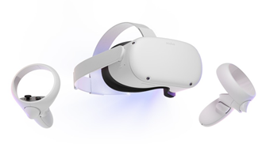

Project: Overview
The main preposition of what's going to happen in the project
Topic - Vansh We noticed that VR was quickly becoming popular amongst everyone and with this pandemic focus being changed to learning online we decided to modernize the learning system so that it is up to date and fun for the students by switching their learning platform to Virtual Reality. We aim to use this for students aged 8-12 year olds. The student can use interactive videos, and draw with pens. We decided to publish through VRchat since we could use their extensive software development kits.
Figure - Oculus Quest 2
Motivation- Eric With the recent pandemic and the sudden switch over to online learning, the cracks and problems in the accepted, traditional learning system have been magnified. Education, particularly at the Primary and lower level, was not prepared for mass quarantine. The sudden absence of social interaction has had a pronounced and obvious effect on children who were no longer able to socially interact and were confined within their own homes. The technology to allow people to interact while socially distanced has existed for years, yet such things were noy effectively employed, either due to financial concerns, technological ineptacy or other difficulties. Thus leading to this project. The motivation of which is to create a workable model for a Virtual Reality based education for use with children 8-12 years old as a temporary replacement for physical social interaction. Such a project would alleviate the anxiety and stress children feel when isolated in their homes and allow for meaningful child social development. While it should not act as a permanent replacement, it should exist for times of high stress like the recent pandemic. For any employers, such a project would show effective understanding of childcare, 3D modelling, education and preparedness to global pandemics.
Landscape- Eric Currently, many similar systems are available in virtual space. A famous example would be Minecraft Education Edition, which has long been in development and a Public Beta version was made available in 2020. The educational uses of Minecraft have long been documented and understood even back in 2016. Children have been known to have significant improvements in creativity, collaboration, problem-solving, and computational thinking skills after using Minecraft in school. However, Minecraft is not a Virtual Reality game, which will give children the same visual and auditory sensations as true Virtual Reality. VRchat, which is the inspiration of the project, is potentially revolutionary for the education sector. It accomplishes much the same things as Minecraft but in Virtual Reality. Though it is more difficult to get started, the potential applications of VRchat outrips Minecraft in many ways. Despite that, VRchat is still far more complex to get into than Minecraft, costly as well, requiring a VR headset to get started. While our project won’t be getting into the cost side of things, we hopefully will make VR more accessible with an easy and available world.
Figure - Minecraft Education Edition